14 icons, 24×24 RGBA. Source drawings, mode reduction, fixed palettes and native outline cleanup. Review images are displayed at literal saved size.
1 clear-day | 2 clear-night | 3 cloudy | 4 overcast | 5 rain | 6 heavy_rain | 7 storm | 8 snow | 9 blizzard | 10 fog | 11 wind | 12 hail | 13 sandstorm | 14 heat_wave
1×
2×
4×
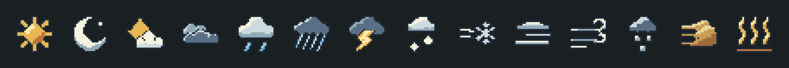
1×
2×
4×
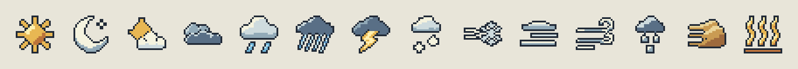
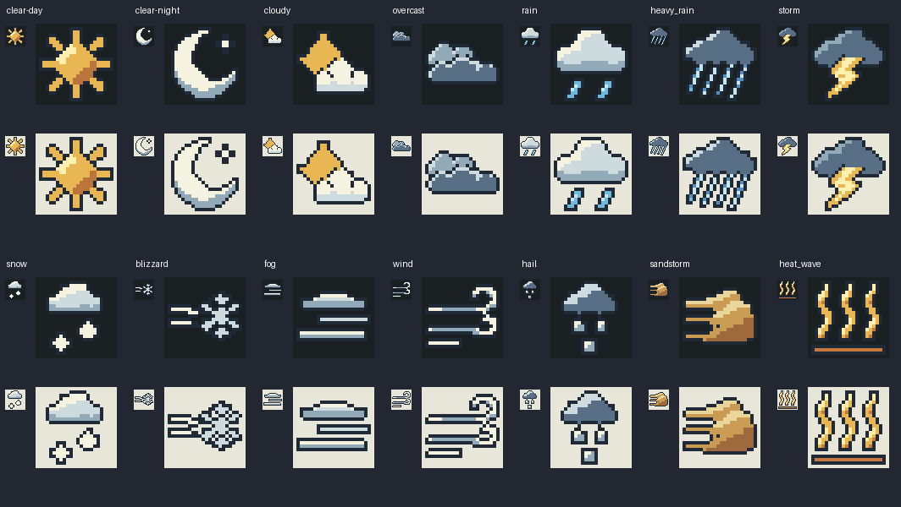
ref-desert-sand
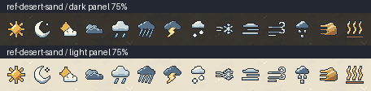
4× proofref-fantasy-forest
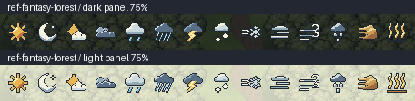
4× proofref-fantasy-grass
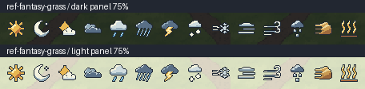
4× proofref-fantasy-town
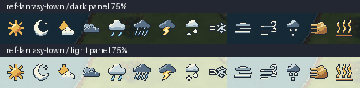
4× proofref-modern-city
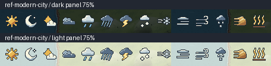
4× proofref-snow
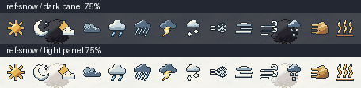
4× proofref-wasteland
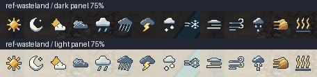
4× proof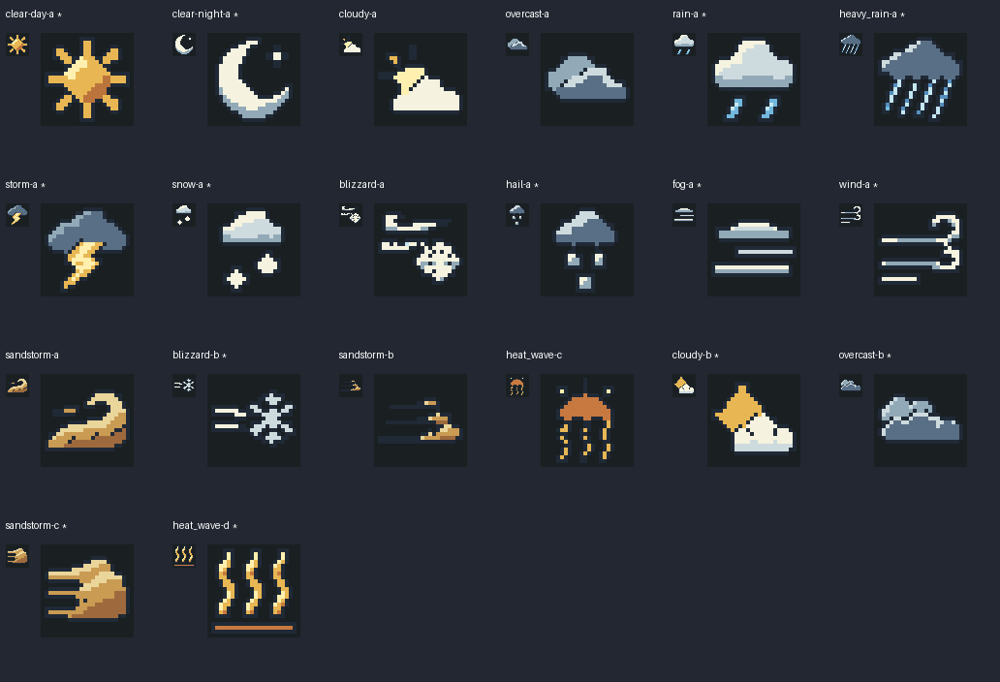
Prompts: generation.json. Measurements: measurements.json. Saved-art self-review; no in-engine test or independent critic verdict.